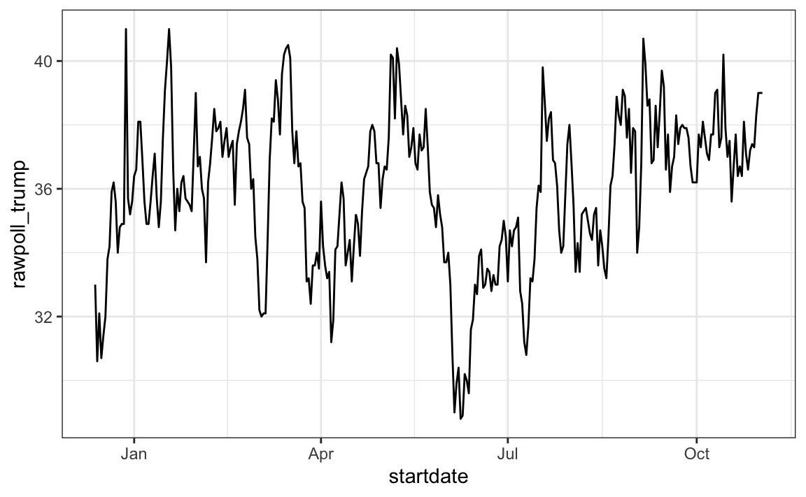
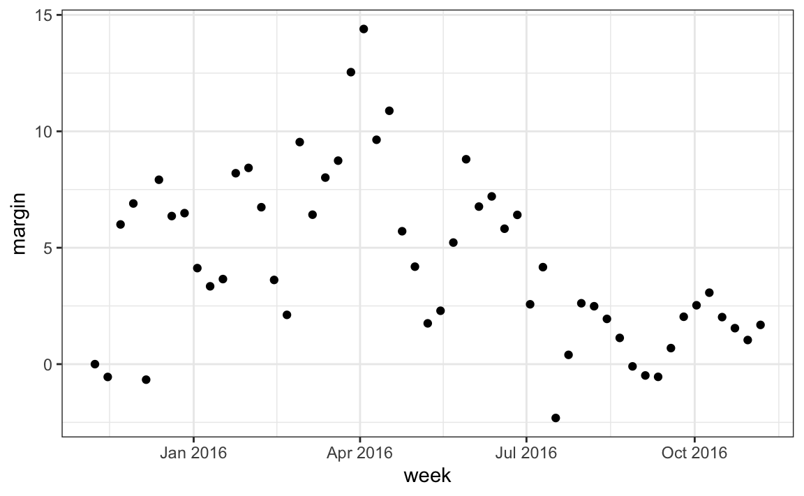

16 Parsing dates and times
16.1 The date data type
We have described three main types of vectors: numeric, character, and logical. In data science projects, we very often encounter variables that are dates. Although we can represent a date with a string, for example November 2, 2017, once we pick a reference day, referred to as the epoch, they can be converted to numbers by calculating the number of days since the epoch. Computer languages usually use January 1, 1970, as the epoch. So, for example, January 2, 1970 is day 1, December 31, 1969 is day -1, and November 2, 2017, is day 17,204.
Now how should we represent dates and times when analyzing data in R? We could just use days since the epoch, but then it is almost impossible to interpret. If I tell you it’s November 2, 2017, you know what this means immediately. If I tell you it’s day 17,204, you will be quite confused. Similar problems arise with times and even more complications can appear due to time zones.
For this reason, R defines a data type just for dates and times. We saw an example in the polls data:
These look like strings, but they are not:
class(polls_us_election_2016$startdate)
#> [1] "Date"Look at what happens when we convert them to numbers:
as.numeric(polls_us_election_2016$startdate) |> head()
#> [1] 17108 17106 17107 17109 17108 17108It turns them into days since the epoch. The as.Date function can convert a character into a date. So to see that the epoch is day 0 we can type
as.Date("1970-01-01") |> as.numeric()
#> [1] 0Plotting functions, such as those in ggplot, are aware of the date format. This means that, for example, a scatterplot can use the numeric representation to decide on the position of the point, but include the string in the labels:
polls_us_election_2016 |> filter(pollster == "Ipsos" & state =="U.S.") |>
ggplot(aes(startdate, rawpoll_trump)) +
geom_line()
Note in particular that the month names are displayed, a very convenient feature.
16.2 The lubridate package
The tidyverse includes functionality for dealing with dates through the lubridate package.
We will take a random sample of dates to show some of the useful things one can do:
The functions year, month and day extract those values:
tibble(date = dates,
month = month(dates),
day = day(dates),
year = year(dates))
#> # A tibble: 10 × 4
#> date month day year
#> <date> <dbl> <int> <dbl>
#> 1 2016-05-31 5 31 2016
#> 2 2016-08-08 8 8 2016
#> 3 2016-08-19 8 19 2016
#> 4 2016-09-22 9 22 2016
#> 5 2016-09-27 9 27 2016
#> # ℹ 5 more rowsWe can also extract the month labels:
month(dates, label = TRUE)#> [1] May Aug Aug Sep Sep Oct Oct Oct Oct Oct
#> 12 Levels: Jan < Feb < Mar < Apr < May < Jun < Jul < Aug < ... < DecAnother useful set of functions are the parsers that convert strings into dates. The function ymd assumes the dates are in the format YYYY-MM-DD and tries to parse as well as possible.
A further complication comes from the fact that dates often come in different formats in which the order of year, month, and day are different. The preferred format is to show year (with all four digits), month (two digits), and then day, or what is called the ISO 8601. Specifically we use YYYY-MM-DD so that if we order the string, it will be ordered by date. You can see the function ymd returns them in this format.
But, what if you encounter dates such as “09/01/02”? This could be September 1, 2002 or January 2, 2009 or January 9, 2002. In these cases, examining the entire vector of dates will help you determine what format it is by process of elimination. Once you know, you can use the many parses provided by lubridate.
For example, if the string is:
x <- "09/01/02"The ymd function assumes the first entry is the year, the second is the month, and the third is the day, so it converts it to:
ymd(x)
#> [1] "2009-01-02"The mdy function assumes the first entry is the month, then the day, then the year:
mdy(x)
#> [1] "2002-09-01"The lubridate package provides a function for every possibility:
The lubridate package is also useful for dealing with times. In R base, you can get the current time typing Sys.time(). The lubridate package provides a slightly more advanced function, now, that permits you to define the time zone:
You can see all the available time zones with OlsonNames() function.
We can also extract hours, minutes, and seconds:
The package also includes a function to parse strings into times as well as parsers for time objects that include dates:
This package has many other useful functions. We describe two of these here that we find particularly useful.
The make_date function can be used to quickly create a date object. It takes three arguments: year, month, day, hour, minute, seconds, and time zone defaulting to the epoch values on UTC time. So create an date object representing, for example, July 6, 2019 we write:
make_date(2019, 7, 6)
#> [1] "2019-07-06"To make a vector of January 1 for the 80s we write:
make_date(1980:1989)
#> [1] "1980-01-01" "1981-01-01" "1982-01-01" "1983-01-01" "1984-01-01"
#> [6] "1985-01-01" "1986-01-01" "1987-01-01" "1988-01-01" "1989-01-01"Another very useful function is the round_date. It can be used to round dates to nearest year, quarter, month, week, day, hour, minutes, or seconds. So if we want to group all the polls by week of the year we can do the following:
polls_us_election_2016 |>
mutate(week = round_date(startdate, "week")) |>
group_by(week) |>
summarize(margin = mean(rawpoll_clinton - rawpoll_trump)) |>
ggplot(aes(week, margin)) +
geom_point()
16.3 Exercises
In the previous exercise section, we wrangled data from a PDF file containing vital statistics from Puerto Rico. We did this for the month of September. Below we include code that does it for all 12 months.
library(tidyverse)
library(lubridate)
library(purrr)
library(pdftools)
library(dslabs)
fn <- system.file("extdata", "RD-Mortality-Report_2015-18-180531.pdf",
package="dslabs")
dat <- map_df(str_split(pdf_text(fn), "\n"), function(s){
s <- str_trim(s)
header_index <- str_which(s, "2015")[1]
tmp <- str_split(s[header_index], "\\s+", simplify = TRUE)
month <- tmp[1]
header <- tmp[-1]
tail_index <- str_which(s, "Total")
n <- str_count(s, "\\d+")
out <- c(1:header_index, which(n == 1),
which(n >= 28), tail_index:length(s))
s[-out] |> str_remove_all("[^\\d\\s]") |> str_trim() |>
str_split_fixed("\\s+", n = 6) |> .[,1:5] |> as_tibble() |>
setNames(c("day", header)) |>
mutate(month = month, day = as.numeric(day)) |>
pivot_longer(-c(day, month), names_to = "year", values_to = "deaths") |>
mutate(deaths = as.numeric(deaths))
}) |>
mutate(month = recode(month,
"JAN" = 1, "FEB" = 2, "MAR" = 3,
"APR" = 4, "MAY" = 5, "JUN" = 6,
"JUL" = 7, "AGO" = 8, "SEP" = 9,
"OCT" = 10, "NOV" = 11, "DEC" = 12)) |>
mutate(date = make_date(year, month, day)) |>
filter(date <= "2018-05-01")1. We want to make a plot of death counts versus date. A first step is to convert the month variable from characters to numbers. Note that the month abbreviations are in Spanglish. Use the recode function to convert months to numbers and redefine tab.
2. Create a new column date with the date for each observation. Hint: use the make_date function.
3. Plot deaths versus date.
4. Note that after May 31, 2018, the deaths are all 0. The data is probably not entered yet. We also see a drop off starting around May 1. Redefine tab to exclude observations taken on or after May 1, 2018. Then, remake the plot.
5. Remake the plot above but this time plot deaths against the day of the year, for example, Jan 12, 2016 and Jan 12, 2017 are both day 12. Use color to denote the different years. Hint: use the lubridate function yday.
6. Remake the plot above but, this time, use two different colors for before and after September 20, 2017.
7. Advanced: remake the plot above, but this time show the month in the x-axis. Hint: create a variable with the date for a given year. Then use the scale_x_date function to show just the months.
8. Remake the deaths versus day but with weekly averages. Hint: use the function round_date.
9. Remake the plot but with monthly averages. Hint: use the function round_date again.